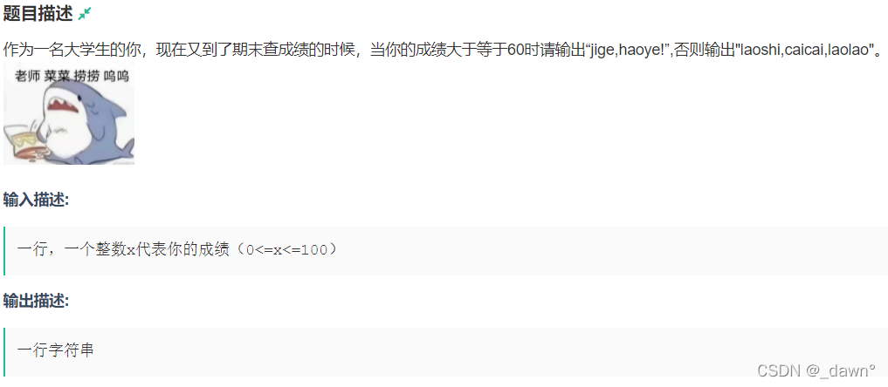

本次题目较简单，但是也有不少地方需要注意~
A-大学期末现状

思路 ： 签到，hhhhhhhhh
AC代码：
1 2 3 4 5 6 7 8 9 10 11 12 13 14 15 16 17 18 19 20 21 #include <bits/stdc++.h> using namespace std;typedef long long ll;#define ios ios::sync_with_stdio(false);cin.tie(0);cout.tie(0); #define INF 0x3f3f3f3f const int mod=1e9 +7 ;int a; int main () cin>>a; if (a>=60 ) cout<<"jige,haoye!" <<'\n' ; else cout<<"laoshi,caicai,laolao" <<'\n' ; return 0 ; }
B-G1024
思路 ：签到，注意读题。
AC代码：
1 2 3 4 5 6 7 8 9 10 11 12 13 14 15 16 17 18 19 20 21 22 23 24 25 26 27 28 29 #include <bits/stdc++.h> using namespace std;typedef long long ll;#define ios ios::sync_with_stdio(false);cin.tie(0);cout.tie(0); #define INF 0x3f3f3f3f const int mod=1e9 +7 ;int n,k,x,m;int main () cin>>n>>k; int ans=0 ,day=0 ;; for (int i=1 ;i<=k;i++) { cin>>x>>m; int b=m-x; if (b>=n&&ans==0 ) ans=b,day=i; } if (ans) cout<<day<<'\n' ; else cout<<"G!" <<'\n' ; return 0 ; }
C-NEUQ
思路 ：从字符串开头遍历，将N、E、U、Q之间的其他字母去掉，但是注意读题，是完整的NEUQ，因为字符串末尾很可能凑不齐四个字母！（WA了一发的原因。。。）
AC代码：
1 2 3 4 5 6 7 8 9 10 11 12 13 14 15 16 17 18 19 20 21 22 23 24 25 26 27 28 29 30 31 32 33 34 35 36 37 38 39 40 41 42 43 44 45 46 47 48 49 50 51 52 53 54 #include <bits/stdc++.h> using namespace std;typedef long long ll;#define ios ios::sync_with_stdio(false);cin.tie(0);cout.tie(0); #define INF 0x3f3f3f3f const int mod=1e9 +7 ;int n;string s; int main () cin>>n; cin>>s; int flag=0 ; int cnt=0 ; for (int i=0 ;i<n;i++) { bool f=false ; if (s[i]=='N' &&flag==0 ||s[i]=='N' &&flag==4 ) { flag=1 ; f=true ; continue ; } if (s[i]=='E' &&flag==1 ) { flag=2 ; f=true ; continue ; } if (s[i]=='U' &&flag==2 ) { flag=3 ; f=true ; continue ; } if (s[i]=='Q' &&flag==3 ) { flag=4 ; f=true ; continue ; } if (!f) ++cnt; } cout<<cnt<<'\n' ; return 0 ; }
标程：
1 2 3 4 5 6 7 8 9 10 11 12 13 14 15 16 17 #include <bits/stdc++.h> using namespace std;const int N = 1e6 + 10 ;char S[N],T[]={'N' ,'E' ,'U' ,'Q' };int main () int n;scanf ("%d" ,&n); cin >> S; int cnt = 0 ,now = 0 ; for (int i = 0 ;i < n;i ++){ if (T[now]==S[i]){ now++; if (now==4 )cnt++,now=0 ; } } printf ("%d\n" ,n-4 *cnt); return 0 ; }
os：代码简洁一些欸。。。
D-小G的任务
思路 ： 签到，把给出的1~n每个数每一位加起来。
AC代码：
1 2 3 4 5 6 7 8 9 10 11 12 13 14 15 16 17 18 19 20 21 22 23 24 25 26 27 28 29 30 31 32 33 34 35 36 37 38 39 #include <bits/stdc++.h> using namespace std;typedef long long ll;#define ios ios::sync_with_stdio(false);cin.tie(0);cout.tie(0); #define INF 0x3f3f3f3f const int mod=1e9 +7 ;int n;int func (int n) int tot=0 ; while (n) { tot+=n%10 ; n/=10 ; } return tot; } int main () cin>>n; ll ans=0 ; for (int i=1 ;i<=n;i++) { if (i<=9 ) ans+=i; else ans+=func (i); } cout<<ans<<'\n' ; return 0 ; }
E-nn与游戏
思路 ：bfs找最短路，只不过需要用到很多次，这个时候需要注意细节：1、标记数组每次搜索之前初始化；2、注意读题，单位间可以相互阻挡，但是寻找的起点和终点两者是可以走通的（一点小问题困了我将近一个小时QAQ）。
AC代码：
1 2 3 4 5 6 7 8 9 10 11 12 13 14 15 16 17 18 19 20 21 22 23 24 25 26 27 28 29 30 31 32 33 34 35 36 37 38 39 40 41 42 43 44 45 46 47 48 49 50 51 52 53 54 55 56 57 58 59 60 61 62 63 64 65 66 67 68 69 70 71 72 73 74 75 76 77 78 79 80 81 82 83 84 85 86 87 88 89 90 91 92 93 94 95 96 #include <bits/stdc++.h> using namespace std;typedef long long ll;#define ios ios::sync_with_stdio(false);cin.tie(0);cout.tie(0); #define INF 0x3f3f3f3f const int mod=1e9 +7 ;const int N=1e3 +5 ;int n,m,x,y,t,x2[N],y2[N],x3[N],y3[N];int ans;int dx[4 ]={1 ,0 ,0 ,-1 };int dy[4 ]={0 ,1 ,-1 ,0 };char c[N][N];bool vis[N][N],val[N][N];struct node { int x,y,step; node (){}; node (int xx,int yy,int ss) { x=xx,y=yy,step=ss; } }; bool check (int xx,int yy) if (xx>=0 &&xx<n&&yy>=0 &&yy<n&&c[xx][yy]!='1' &&!val[xx][yy]) return true ; else return false ; } bool bfs (int o,int p,int a,int b) queue<node>q; node s (o,p,0 ) ; vis[o][p]=true ; q.push (s); while (!q.empty ()) { node now=q.front (); q.pop (); if (now.x==a&&now.y==b) { ans=now.step; return true ; } for (int i=0 ;i<4 ;i++) { int nx=now.x+dx[i]; int ny=now.y+dy[i]; if (check (nx,ny)&&!vis[nx][ny]) { node nex (nx,ny,now.step+1 ) ; vis[nx][ny]=true ; q.push (nex); } } } return false ; } int main () cin>>n>>m; for (int i=0 ;i<n;i++) for (int j=0 ;j<n;j++) c[i][j]='0' ; for (int i=1 ;i<=m;i++) cin>>x>>y,c[x][y]='1' ; cin>>t; for (int i=1 ;i<=t;i++) { cin>>x2[i]>>y2[i]>>x3[i]>>y3[i]; val[x2[i]][y2[i]]=true ; val[x3[i]][y3[i]]=true ; } for (int i=1 ;i<=t;i++) { memset (vis,0 ,sizeof (vis)); val[x2[i]][y2[i]]=false ; val[x3[i]][y3[i]]=false ; if (bfs (x2[i],y2[i],x3[i],y3[i])) cout<<ans<<'\n' ; else cout<<"-1" <<'\n' ; val[x2[i]][y2[i]]=true ; val[x3[i]][y3[i]]=true ; } return 0 ; }
os：好久没写bfs了，练习练习~
F-第二大数
思路 ： 突破口是假设我们知道(l,r)之间的第二大数，那么(l,r+1)之间的第二大值我们很容易知道，若a[r+1]>(l,r)的最大值，那么这个最大值为新区间的第二大数；若a[r+1]<(l,r)的最大值且大于第二大值，那么新区间的第二大数为a[r+1]。所以我们对于每个区间维护的是最大值和第二大值。这样解决就可以在O(n*n)解决问题。
AC代码：
1 2 3 4 5 6 7 8 9 10 11 12 13 14 15 16 17 18 19 20 21 22 23 24 25 26 27 28 29 30 31 32 33 34 35 36 #include <bits/stdc++.h> using namespace std;typedef long long ll;#define ios ios::sync_with_stdio(false);cin.tie(0);cout.tie(0); #define INF 0x3f3f3f3f const int mod=1e9 +7 ;const int N=1e4 +5 ;int n,a[N];ll ans; int main () cin>>n; for (int i=1 ;i<=n;i++) cin>>a[i]; int fir,sec; for (int i=1 ;i<n;i++) { fir=max (a[i],a[i+1 ]); sec=min (a[i],a[i+1 ]); ans+=sec; for (int j=i+2 ;j<=n;j++) { if (a[j]>fir) sec=fir,fir=a[j]; else if (a[j]>sec) sec=a[j]; ans+=sec; } } cout<<ans<<'\n' ; return 0 ; }
G-Num
思路 ： 小小的数学题，我们可以看到(a+1)(b+1)=a b+a+b+1，正好是所给形式+1，那么就判断N+1是否可以写成(a+1)*(b+1)的形式，又因为a、b均为大于0的整数，则N+1的因数均为大于等于2的数，即合数，从而判断N+1是否为素数即可。
AC代码：
1 2 3 4 5 6 7 8 9 10 11 12 13 14 15 16 17 18 19 20 21 22 23 24 25 26 27 28 29 30 31 32 33 34 #include <bits/stdc++.h> using namespace std;typedef long long ll;#define ios ios::sync_with_stdio(false);cin.tie(0);cout.tie(0); #define INF 0x3f3f3f3f const int mod=1e9 +7 ;ll n; int isprime (ll n) if (n==1 ) return 0 ; if (n==2 ||n==3 ) return 1 ; if (n%6 !=1 &&n%6 !=5 ) return 0 ; int tmp=sqrt (n); for (int i=5 ;i<=tmp;i+=6 ) if (n%i==0 ||n%(i+2 )==0 ) return 0 ; return 1 ; } int main () cin>>n; if (isprime (n+1 )) cout<<"No" <<'\n' ; else cout<<"Yes" <<'\n' ; return 0 ; }
os：自定义函数是我之前从网上看到的判断大素数的方法，因为这个题数据比较大，用线性筛预处理不太行。大概是与6的倍数余数有关，可以自行证明一下，这个方法多次使用，感觉还挺好用的，啊当然，直接for循环判断也行，用2~sqrt(n)。
H-特征值
思路 ：一点点数学知识~向下取整且除的数都是10的整数次方，说明得出的数是X不断去掉后一位的值。再判断所给题目范围，10的50万次方一定小于10的k次方（k取最大值） ，说明最后X除以一个数的值一定为0，那么问题就变成了把X依次去掉最后一位的值相加。我用数组和字符串模拟了一个大数相加。
AC代码：
1 2 3 4 5 6 7 8 9 10 11 12 13 14 15 16 17 18 19 20 21 22 23 24 25 26 27 28 29 30 31 32 33 34 35 36 37 38 39 40 #include <bits/stdc++.h> using namespace std;typedef long long ll;#define ios ios::sync_with_stdio(false);cin.tie(0);cout.tie(0); #define INF 0x3f3f3f3f const int mod=1e9 +7 ;const int N=5e5 +10 ;int a[N],x;string s; char c[N];int main () int cnt=0 ; cin>>s; int len=s.length (); for (int i=0 ;i<len;i++) a[++cnt]=s[i]-'0' ; int ans=0 ; for (int i=cnt;i>=1 ;i--) ans+=a[i]; int tot=0 ,tmpn=0 ,tmpl=0 ; while (ans) { c[++tot]=ans%10 +'0' ; tmpl=tmpn; tmpn=ans/10 ; ans=tmpn+ans-tmpl-a[cnt--]; } for (int i=tot;i>=1 ;i--) cout<<c[i]; cout<<'\n' ; return 0 ; }
标程：解释：
参考讲的很清楚喔 E题
1 2 3 4 5 6 7 8 9 10 11 12 13 14 15 16 17 18 19 20 21 22 23 #include <bits/stdc++.h> using namespace std;string x; int s,c;string res; int main () cin>>x; for (int i=0 ;i<x.length ();i++) s+=x[i]-'0' ; for (int i=x.length ()-1 ;;i--) { c+=s; res.push_back ('0' +(c%10 )); c/=10 ; if (i>=0 ) s-=(x[i]-'0' ); if (i<=0 && c==0 ) break ; } reverse (res.begin (),res.end ()); cout<<res; return 0 ; }
os：？？？比完赛用了一个很笨的方法做出来了发现关注的师哥一天前刚写过原题？？？
I-最大公约数
思路 ： 对于序列A，可以知道x|a[1]，x|a[2]，x|a[3]…，那么对于每一个a[i]，存在k[i]*x=a[i]，则
AC代码：
1 2 3 4 5 6 7 8 9 10 11 12 13 14 15 16 17 18 19 20 21 22 23 24 25 26 #include <bits/stdc++.h> using namespace std;typedef long long ll;#define ios ios::sync_with_stdio(false);cin.tie(0);cout.tie(0); #define INF 0x3f3f3f3f const int mod=1e9 +7 ;const int N=505 ;int n,a[N],ans,cnt;int main () cin>>n; for (int i=1 ;i<=n;i++) cin>>a[i],ans+=a[i]; for (int i=1 ;i<=ans;i++) { if (ans%i==0 ) cnt++; } cout<<cnt<<'\n' ; return 0 ; }
os：简单数论？？？
J-玄神的字符串
思路 ： 贪心，因为我们发现答案与0,1的位置无关，所以根据a，b，c之间大小关系分类讨论；
标解：分三种情况讨论。
AC代码：
1 2 3 4 5 6 7 8 9 10 11 12 13 14 15 16 17 18 19 20 21 22 23 24 25 26 27 28 29 30 31 32 33 34 #include <bits/stdc++.h> using namespace std;typedef long long ll;#define ios ios::sync_with_stdio(false);cin.tie(0);cout.tie(0); #define INF 0x3f3f3f3f const int mod=1e9 +7 ;string s; int a,b,c;int main () cin>>s; cin>>a>>b>>c; int len=s.length (); int cnt0=0 ,cnt1=0 ; for (int i=0 ;i<len;i++) { if (s[i]=='0' ) cnt0++; else cnt1++; } int ans; if (a>=b+c) ans=(cnt0%2 )*c+len/2 *b; else if (b>=a+c) ans=(len/2 -min (cnt0,cnt1))*c+len/2 *a; else if (a>=b) ans=cnt0/2 *b+cnt1/2 *b+cnt0%2 *a; else ans=min (cnt1,cnt0)*a+(max (cnt1,cnt0)-min (cnt0,cnt1))/2 *b; cout<<ans<<'\n' ; return 0 ; }
os：注意除以2的地方，一定先除以2再乘需要乘的数！！！
L-WireConnection
思路 ：kruskal求最小生成树，板子题。
AC代码：
1 2 3 4 5 6 7 8 9 10 11 12 13 14 15 16 17 18 19 20 21 22 23 24 25 26 27 28 29 30 31 32 33 34 35 36 37 38 39 40 41 42 43 44 45 46 47 48 49 50 51 52 53 54 55 56 57 58 59 60 61 62 63 64 65 66 67 68 69 70 71 #include <bits/stdc++.h> using namespace std;typedef long long ll;#define ios ios::sync_with_stdio(false);cin.tie(0);cout.tie(0); #define INF 0x3f3f3f3f const int mod=1e9 +7 ;const int N=2e3 +5 ;ll n,m; int a[N],cnt,fa[N*N];ll x[N],y[N],z[N]; struct node { ll w; int x,y; bool operator <(const node &a) { return w<a.w; } } e[N*N]; void init () for (int i=1 ;i<n*n;i++) fa[i]=i; } int getfa (int x) return fa[x]==x?x:fa[x]=getfa (fa[x]); } ll len (int i,int j) return ceil (sqrt ((x[i]-x[j])*(x[i]-x[j])+(y[i]-y[j])*(y[i]-y[j])+(z[i]-z[j])*(z[i]-z[j]))); } int main () cin>>n; init (); for (int i=1 ;i<=n;i++) cin>>x[i]>>y[i]>>z[i]; for (int i=1 ;i<=n;i++) { for (int j=1 ;j<i;j++) { e[++cnt].x=i,e[cnt].y=j,e[cnt].w=len (i,j); } } sort (e+1 ,e+1 +cnt); ll ans=0 ; for (int i=1 ;i<=cnt;i++) { int x=getfa (e[i].x),y=getfa (e[i].y); if (x!=y) { ans+=e[i].w; fa[y]=x; --n; if (n==1 ) break ; } } cout<<ans<<'\n' ; return 0 ; }
os：图论QWQ
若有错误请指教
Orz
If you like this blog or find it useful for you, you are welcome to comment on it. You are also welcome to share this blog, so that more people can participate in it. If the images used in the blog infringe your copyright, please contact the author to delete them. Thank you !
 编辑
编辑